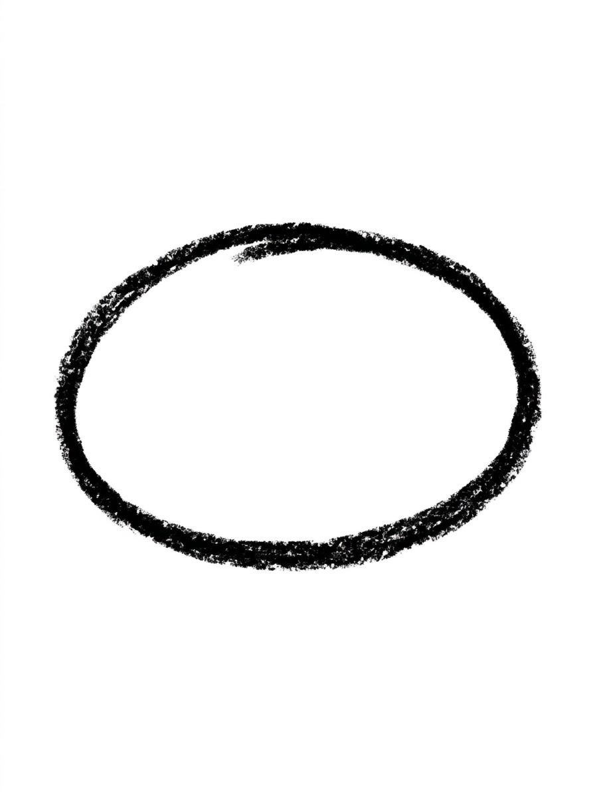
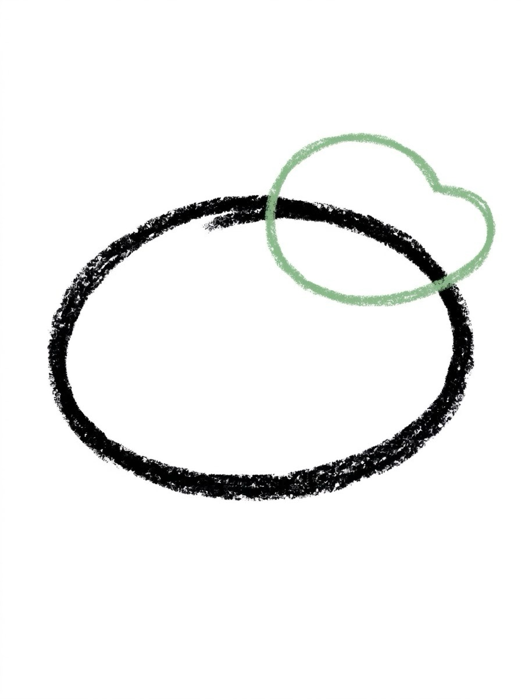
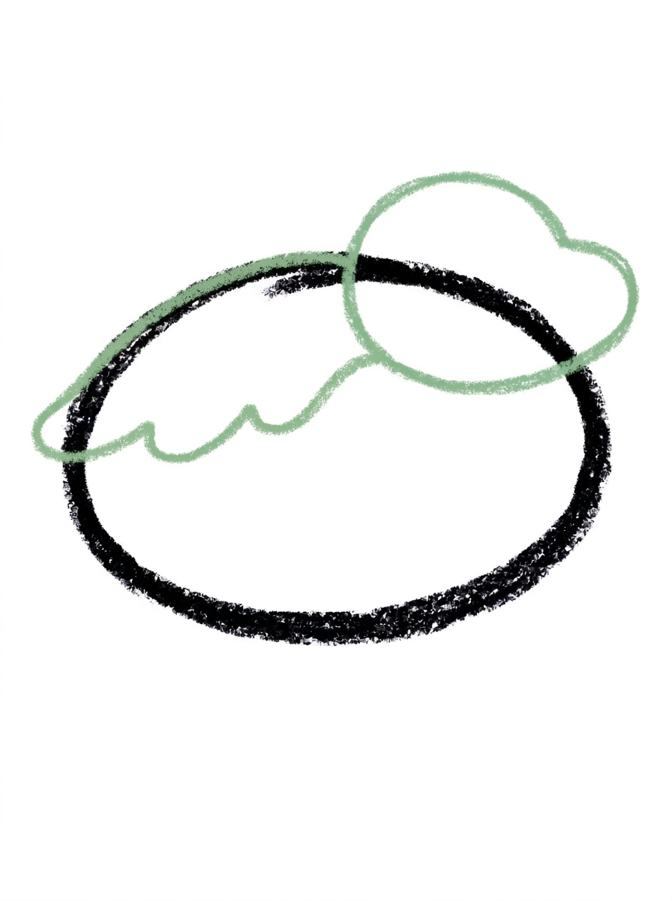
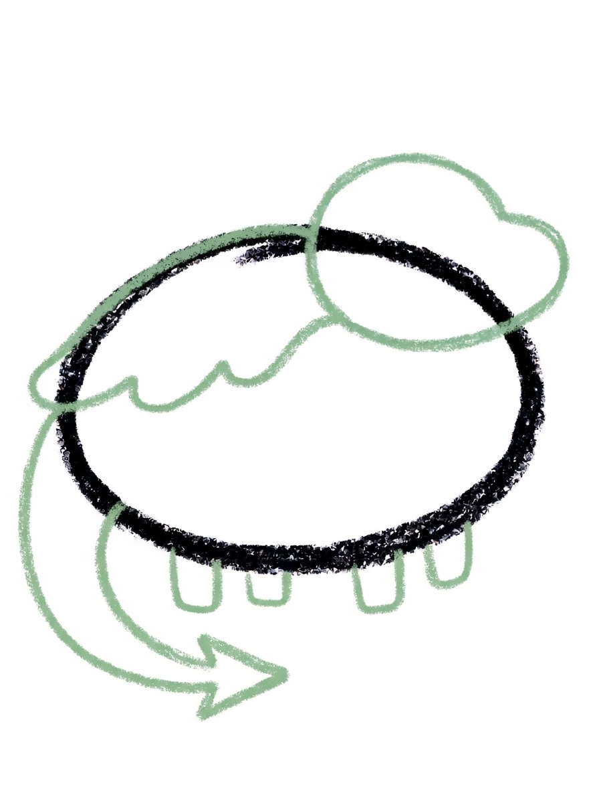
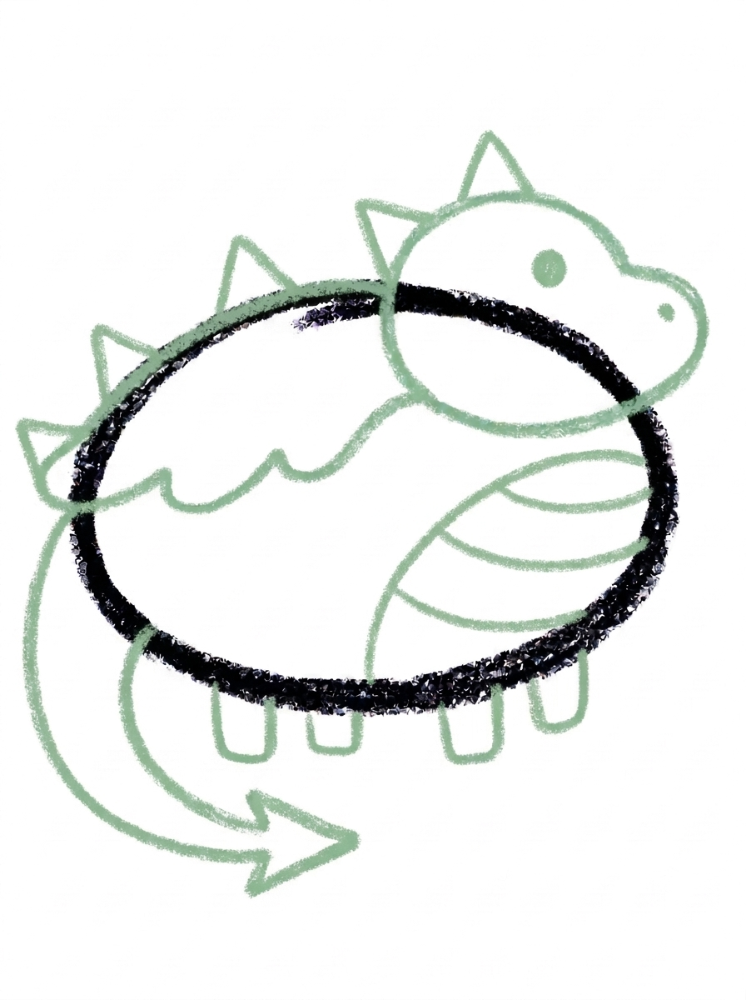
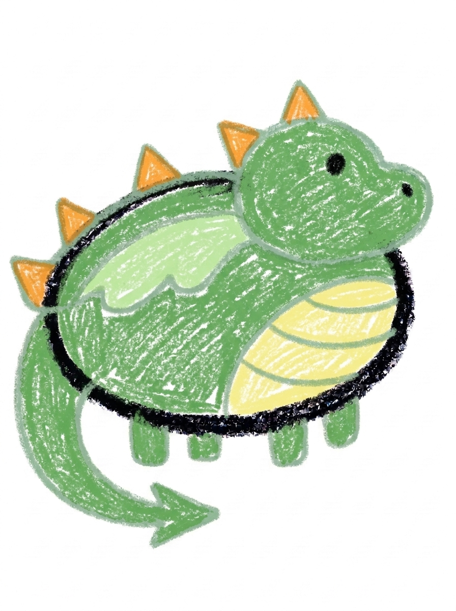

Dragon Drawing for Kids How to Draw A Dragon in 6 Easy Steps
Quick Answer
Draw a dragon in six easy steps: a plump oval body, a rounded head with a snout, one big wing, a long curvy tail, four short legs, then triangle spikes, a dot eye, and belly lines. Color it green with orange spikes. Made for ages 3 and up — no signup needed, just print and draw.
At a Glance
- Subject: How to draw a dragon
- Ages: 3+
- Steps: 6 steps
- Time: ~15 min
- Difficulty: Easy
- Supplies: Paper, crayons
Dragons feel like an 'older kid' drawing, but this one is secretly simple — it's stacked from plump ovals, one flat wing, a curvy tail, and little triangle spikes. If your child can draw an oval and a triangle, they can draw this friendly dragon.
✏️ Draw Your Dragon in 6 Easy Steps
One step per box — this step by step dragon drawing shows each new part in a different color so kids can see exactly what changed.
Step 1: The Body

Draw one big plump oval lying on its side in the middle of your paper. This round shape becomes your dragon's body.
Step 2: The Head

Add a rounded oval at the front of the body, up high so the two shapes touch and overlap a little. The bump at the front is your dragon's snout.
Step 3: The Wing

Draw one big wing lying flat along the side of the body, just behind the head, with a wavy edge along the bottom.
Step 4: The Tail and Legs

Add one long curvy tail sweeping down from the back of the body and along the ground, ending in a triangle point. Then draw four short legs under the body.
Step 5: The Spikes and Face

Add small triangle spikes — one on top of the head and a row down the back. Then draw one round dot eye, a tiny nostril dot on the snout, and three curvy lines across the front of the body for the belly.
Step 6: Color It In

Color your dragon! Friendly green for the body, head, legs, and tail, a lighter green wing, a pale yellow belly, and orange spikes. Great drawing!
📊 Dragon Drawing by Age
Every age can join in — just adjust the job.
| Age | What they can do | Tip |
|---|---|---|
| 3-4 | Draw the big plump body oval and color the finished dragon in friendly green. | Keep the oval big and low on the page — the tail needs room to sweep along the ground behind it. |
| 4-5 | Add the rounded head, the big flat wing with its wavy edge, and the row of triangle spikes. | Counting the spikes together as they go (one, two, three…) turns the decoration step into a little math moment. |
| 6+ | Finish all six steps, including the long curvy tail ending in a triangle point and the three belly lines. | Let older kids design their own spike pattern — triangles, zigzags, or rounded bumps — since spikes are where a dragon's personality shows. |
🖨️ Download Your Free Dragon Drawing Printable
The printable lays out all 6 steps one per box, big enough for little hands — kids draw right alongside each step.
⬇️ Open Free Printable 🖨️ Print🎁 Free printable for ages 3+
🐉 Dragon Story Page
Give your dragon a story: draw a cave, a castle, or a pile of treasure underneath it, then decide together what kind of dragon it is — a friendly dragon who delivers mail, a sleepy dragon who guards bedtime stories, or a brave dragon who protects the backyard. Write one sentence about the dragon under the drawing (or dictate it for a grown-up to write) and the picture becomes the cover of a story your child can keep telling.
What You'll Need to Draw A Dragon
All you need is a pencil, an eraser, and crayons or markers. For the colors in the tutorial, have green ready for the body, head, legs, and tail, a lighter green for the wing, pale yellow for the belly, and orange for the spikes. Regular printer paper or a sketchbook both work.
What They're Learning
This tutorial practices plump ovals (body and head), a wavy-edged wing shape, a long curving tail line that ends in a triangle point, and repeated small triangles for the spikes — great pattern practice. Kids also work on counting (four legs, three belly lines), left-to-right sequencing, and the fine-motor control needed to keep spikes marching in a row down the dragon's back.
Make It Yours
Try a fire-breathing version by adding a wavy orange flame from the snout, a sleeping dragon by swapping the dot eye for a curved closed eye and adding Z letters, a baby dragon using the same steps drawn smaller with a bigger head, or a rainbow dragon with a different color on every spike. Two dragons facing each other make a fun 'best friends' card.
🛒 Our Favorite Drawing Supplies
These are the supplies we reach for in our own home — washable (because kids), quality paper, and enough colors to avoid fights.
As an Amazon Associate, MomYouNeedThis earns from qualifying purchases — at no extra cost to you.
💡 Dragon Drawing Tips for Parents
Step 4 carries the most drawing: the tail and four legs in one step. Do the tail first and let it sweep low along the ground — if it floats in the air, the dragon looks like it's falling. Then add the legs in pairs, front two and back two, and count them out loud together.
The wing in step 3 lies flat along the body's side like a resting cape, which surprises kids who expect it sticking up. Show them the picture before they draw so the shape makes sense. And if the spikes in step 5 come out different sizes, that's fine — real rows of anything are a little uneven, and uneven spikes give the dragon character.
✏️ Dragon Drawing Step by Step
A dragon is exactly the kind of subject kids ask for and then declare 'too hard' — wings, spikes, a tail, legs. This tutorial answers that by building the dragon the way you'd build with blocks: one sturdy piece at a time, each piece a shape your child already knows how to draw.
The plump oval body goes down first and anchors everything. The head, wing, tail, and legs all attach to that body, so there's never a moment of wondering where a part belongs. By the time the spikes and face arrive at step 5, the dragon is already unmistakably a dragon, and the details are pure fun.
Work through the steps in order and let your child check each one against the picture before moving on. That checking habit — draw, compare, continue — is the real skill underneath every drawing tutorial, and dragons are a motivating place to practice it.
See free dragon printable for more.
✏️ One Shape Per Step, Six Steps Total
The order is deliberate: step 1, one big plump oval body; step 2, a rounded oval head up high at the front with a bump for the snout; step 3, one big wing lying flat along the side with a wavy bottom edge.
Step 4 adds the long curvy tail sweeping down and along the ground into a triangle point, plus four short legs under the body. Step 5 is the decoration step — triangle spikes on the head and down the back, a dot eye, a tiny nostril dot, and three curvy belly lines. Step 6 colors it in: greens for the body and wing, pale yellow belly, orange spikes.
Six steps might sound like a lot, but look at the heaviest steps: each one is still just one kind of mark repeated or one shape placed. Nothing in this tutorial requires a straightedge, a perfect circle, or starting over — wobbly lines simply make the dragon look hand-drawn and charming.
See free dragon printable for more.
🐉 Cute Dragon Drawing
What makes this a cute dragon drawing instead of a fierce one? Proportions. The body is plump and low, the head is round with a soft snout bump, the eye is a single friendly dot, and the spikes are small triangles rather than sharp horns. Round and chubby reads 'friend' to young kids; long and pointy reads 'monster.'
You can push the cuteness further at coloring time: rosy cheeks on the snout, a heart-shaped belly patch instead of lines, or rainbow spikes. A baby dragon also works beautifully — repeat the same steps smaller, with an even bigger head compared to the body.
Keeping a dragon friendly matters for bedtime art and younger siblings. This is a dragon who can star in made-up stories, guard a pillow fort, and get colored pink without anyone feeling the picture is 'wrong.'
See free dragon printable for more.
❓ Dragon Drawing FAQs
What is the easiest way to draw a dragon?
Start with one big plump oval for the body, then build on it one shape at a time: a rounded head with a snout bump, one big wing along the side, a long curvy tail with four legs, triangle spikes, and finally the face. The six steps turn a 'hard' dragon into a stack of easy shapes.
What age is this dragon drawing for?
It's made for ages 3 and up. The shapes are all preschool-friendly — ovals, triangles, and dots — and younger kids can do the body, head, and coloring while older kids add the tail, spikes, and belly lines themselves.
What supplies do we need?
A pencil, an eraser, paper, and crayons or markers. For colors you'll want green, a lighter green for the wing, pale yellow for the belly, and orange for the spikes.
Is the printable really free?
Yes — every printable on MomYouNeedThis is 100% free, including this dragon drawing tutorial. There is no signup, no email, and no catch — just download, print, and draw.
How do I print it?
Open the PDF and choose Print, then set the scale to 100% (sometimes called Actual Size) so the steps print at full size. The tutorial is designed for regular US Letter paper, and plain printer paper works perfectly.
Is this dragon scary or friendly?
This dragon is friendly on purpose — it's a plump oval body with a big wing, little triangle spikes, and a dot eye, closer to a storybook pet than a scary monster. If your child wants fierce, they can add a second row of spikes and triangle teeth at coloring time.
How do I draw the dragon's wing?
The wing lies flat along the side of the body, just behind the head, with a wavy edge along the bottom — think of a cape resting on the dragon's back rather than a wing raised for flying. One smooth curve down and a wavy line back is all it takes.
Can my dragon be a different color?
Absolutely — dragons are the perfect subject for wild colors. Try a purple dragon with pink spikes, a rainbow belly, or a gold dragon guarding treasure. The shapes stay the same; the colors are where your child makes it theirs.
📚 Keep Exploring
- ✏️ All 53 Drawing Tutorials 53 free step-by-step drawing tutorials for kids.
- 🎀 Cute Coloring Free cute coloring pages for kids.
- ✏️ Drawing Practice Free printable drawing pre-writing worksheet for toddlers.